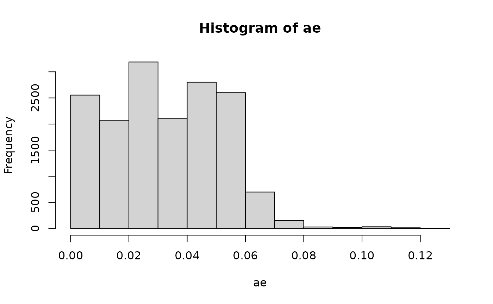

vignettes/mcboost_basics_extensions.Rmd
mcboost_basics_extensions.RmdAs a brief introduction we show how to use mcboost in only 6 lines of code. For our example, we use the data from the sonar binary classification task. We instantiate a MCBoost instance by specifying a auditor_fitter. This auditor_fitter defines the splits into groups in each boosting iteration based on the obtained residuals. In this example, we choose a Tree based model. Afterwards, we run the $multicalibrate() method on our data to start multi-calibration. We only use the first 200 samples of the sonar data set to train our multi-calibrated model.
tsk = tsk("sonar")
d = tsk$data(cols = tsk$feature_names)
l = tsk$data(cols = tsk$target_names)[[1]]
mc = MCBoost$new(auditor_fitter = "TreeAuditorFitter")
mc$multicalibrate(d[1:200,], l[1:200])After the calibration, we use the model to predict on the left-out data (8 observations).
mc$predict_probs(d[201:208,])
#> [1] 0.9077953 0.9077953 1.0000000 1.0000000 0.3387929 1.0000000 0.3387929
#> [8] 0.2116734Internally mcboost runs the following procedure max_iter times:
init_predictor in the first iteration.res = y - y_hat
num_buckets according to y_hat.auditor_fitter) (here calledc(x)) on the data in each bucket with target variable r.misscal = mean(c(x) * res(x))
misscal > alpha: For the bucket with highest misscal, update the model using the prediction c(x). else: Stop the procedureA lot more details can be found either in the code, or in the corresponding publications.
First we download the data and create an mlr3 classification task:
library(data.table)
adult_train = fread(
"https://raw.githubusercontent.com/Yorko/mlcourse.ai/master/data/adult_train.csv",
stringsAsFactors = TRUE
)
adult_train$Country = NULL
adult_train$fnlwgt = NULL
train_tsk = TaskClassif$new("adult_train", adult_train, target = "Target")We removed the features Country and fnlwgt since we expect them to have no predictive power. fnlwgt means final weight and aims to allocate similar weights to people with similar demographic characteristics, while Country has 42 distinct levels but 89 % of the observations are from the United States.
Then we do basic preprocessing:
library(mlr3pipelines)
pipe = po("collapsefactors", no_collapse_above_prevalence = 0.0006) %>>%
po("fixfactors") %>>%
po("encode") %>>%
po("imputehist")
prep_task = pipe$train(train_tsk)[[1]]In order to simulate settings where a sensitive feature is not available, we remove the (dummy encoded) feature Race from the training task.
prep_task$set_col_roles(c("Race.Amer.Indian.Eskimo", "Race.Asian.Pac.Islander", "Race.Black", "Race.Other", "Race.White"), remove_from = "feature")Now we fit a random forest.
library(mlr3learners)
l = lrn("classif.ranger", num.trees = 10L, predict_type = "prob")
l$train(prep_task)A simple way to use the predictions from any model in mcboost is to wrap the predict function and provide it as an initial predictor. This can be done from any model / any library. Note, that we have to make sure, that our init_predictor returns a numeric vector of predictions.
init_predictor = function(data) {
l$predict_newdata(data)$prob[, 2]
}As mcboost requires the data to be provided in X, y format (a data.table or data.frame of features and a vector of labels), we create those two objects.
data = prep_task$data(cols = prep_task$feature_names)
labels = 1 - one_hot(prep_task$data(cols = prep_task$target_names)[[1]])We use a ridge regularized linear regression model as the auditor.
mc = MCBoost$new(auditor_fitter = "RidgeAuditorFitter", init_predictor = init_predictor)
mc$multicalibrate(data, labels)The print method additionally lists the average auditor values in the different buckets in each iteration:
mc
#> <MCBoost>
#> Public:
#> alpha: 1e-04
#> auditor_effect: function (x, aggregate = TRUE, t = Inf, predictor_args = NULL,
#> auditor_effects: list
#> auditor_fitter: RidgeAuditorFitter, LearnerAuditorFitter, AuditorFitter, R6
#> bucket_strategy: simple
#> clone: function (deep = FALSE)
#> eta: 1
#> eval_fulldata: FALSE
#> initialize: function (max_iter = 5, alpha = 1e-04, eta = 1, partition = TRUE,
#> iter_corr: list
#> iter_models: list
#> iter_partitions: list
#> iter_sampling: none
#> max_iter: 5
#> multicalibrate: function (data, labels, predictor_args = NULL, ...)
#> multiplicative: TRUE
#> num_buckets: 2
#> partition: TRUE
#> predict_probs: function (x, t = Inf, predictor_args = NULL, audit = FALSE, ...)
#> predictor: function (data)
#> print: function (...)
#> rebucket: FALSE
#> Private:
#> compute_residuals: function (prediction, labels)
#> update_probs: function (orig_preds, model, x, mask = NULL, audit = FALSE, ...)
#> Fitted Multi-calibration model (5 iters)
#> Correlations per iteration:
#> iter Bucket_1 Bucket_2 Bucket_3
#> 1: 1 0.0002345878 0.001607495 0.0111570208
#> 2: 2 0.0003028562 0.001607421 0.0018036510
#> 3: 3 0.0004304191 0.001607421 0.0005702663
#> 4: 4 0.0005746641 0.002004285 0.0005702663
#> 5: 5 0.0007652389 0.002490407 0.0005702663
adult_test = fread(
"https://raw.githubusercontent.com/Yorko/mlcourse.ai/master/data/adult_test.csv",
stringsAsFactors = TRUE
)
adult_test$Country = NULL
adult_test$fnlwgt = NULL
# The first row seems to have an error
adult_test = adult_test[Target != "",]
adult_test$Target = droplevels(adult_test$Target)
# Note, that we have to convert columns from numeric to integer here:
sdc = train_tsk$feature_types[type == "integer", id]
adult_test[, (sdc) := lapply(.SD, as.integer), .SDcols = sdc]
test_tsk = TaskClassif$new("adult_test", adult_test, target = "Target")
prep_test = pipe$predict(test_tsk)[[1]]Now, we can again extract X, y.
test_data = prep_test$data(cols = prep_test$feature_names)
test_labels = 1 - one_hot(prep_test$data(cols = prep_test$target_names)[[1]])and predict.
prs = mc$predict_probs(test_data)The accuracy of the multi-calibrated model
is similar to the non-calibrated model.
But if we have a look at the bias for the different subpopulations of feature Race, we can see that the predictions got more calibrated. Note that we did not explicitly give neither the initial model nor the auditor access to the feature Race.
# Get bias per subgroup for multi-calibrated predictor
adult_test$biasmc = (prs - test_labels)
adult_test[, .(abs(mean(biasmc)), .N), by = .(Race)]
#> Race V1 N
#> 1: Black 0.008414768 1561
#> 2: White 0.053498900 13946
#> 3: Asian-Pac-Islander 0.064492304 480
#> 4: Other 0.068950996 135
#> 5: Amer-Indian-Eskimo 0.002438774 159
# Get bias per subgroup for initial predictor
adult_test$biasinit = (init_predictor(test_data) - test_labels)
adult_test[, .(abs(mean(biasinit)), .N), by = .(Race)]
#> Race V1 N
#> 1: Black 0.017961316 1561
#> 2: White 0.066077755 13946
#> 3: Asian-Pac-Islander 0.074912961 480
#> 4: Other 0.077236911 135
#> 5: Amer-Indian-Eskimo 0.009339302 159We can also obtain the auditor effect after multicalibration. This indicates “how much” each observation has been affected by multi-calibration (on average across iterations).
ae = mc$auditor_effect(test_data)
hist(ae)
We can see that there are a few instances with more pronounced effects, while most have actually only a low effect.
In order to get more insights, we compute quantiles of the less and more effected population (median as cut-point) and analyze differences.
effect = apply(test_data[ae >= median(ae[ae>0]),], 2, quantile)
no_effect = apply(test_data[ae < median(ae[ae>0]),], 2, quantile)
difference = apply((effect-no_effect), 2, mean)
difference[difference > 0.1]
#> Education.Some.college Martial_Status.Never.married
#> 0.2000000 0.4000000
#> Relationship.Not.in.family Relationship.Own.child
#> 0.2000000 0.2000000
#> Sex.Female Occupation.Priv.house.serv
#> 0.4000000 0.1900148
#> Workclass.Private
#> 0.1991271There seems to be a difference in some variables like Education and Marital_Status.
We can further analyze the individuals:
test_data[ae >= median(ae[ae>0]), names(which(difference > 0.1)), with = FALSE]
#> Education.Some.college Martial_Status.Never.married
#> 1: 0 1
#> 2: 1 1
#> 3: 0 1
#> 4: 0 1
#> 5: 1 1
#> ---
#> 8137: 0 1
#> 8138: 0 0
#> 8139: 0 0
#> 8140: 0 0
#> 8141: 0 0
#> Relationship.Not.in.family Relationship.Own.child Sex.Female
#> 1: 0 1 0
#> 2: 0 1 1
#> 3: 1 0 0
#> 4: 0 0 0
#> 5: 0 0 1
#> ---
#> 8137: 0 1 1
#> 8138: 1 0 0
#> 8139: 1 0 1
#> 8140: 0 0 0
#> 8141: 0 1 0
#> Occupation.Priv.house.serv Workclass.Private
#> 1: 0.000000000 1.00000000
#> 2: 0.030938947 0.02914113
#> 3: 0.000000000 1.00000000
#> 4: 0.004082771 0.98113465
#> 5: 0.000000000 1.00000000
#> ---
#> 8137: 0.000000000 1.00000000
#> 8138: 0.000000000 0.00000000
#> 8139: 0.000000000 1.00000000
#> 8140: 0.037192541 0.95817537
#> 8141: 0.000000000 1.00000000mcboost does not require your model to be a mlr3 model. As an input, mcboost expects a function init_predictor that takes as input data and returns a prediction.
tsk = tsk("sonar")
data = tsk$data()[, Class := as.integer(Class) - 1L]
mod = glm(data = data, formula = Class ~ .)The init_predictor could then use the glm model:
init_predictor = function(data) {
predict(mod, data)
}… and we can calibrate this predictor.
d = data[, -1]
l = data$Class
mc = MCBoost$new(init_predictor = init_predictor)
mc$multicalibrate(d[1:200,], l[1:200])
mc$predict_probs(d[201:208,])
#> 1 2 3 4 5 6
#> 0.0001870999 0.0178598234 0.4486733200 0.0001331085 0.1418422155 0.2885341699
#> 7 8
#> 0.2571026429 0.7356629651Very often MCBoost’s calibration is very aggressive and tends to overfit. This section tries to introduce a method to regularize against this overfitting.
In this section we use a Cross-Validated learner that predicts on held-out data during the training phase. This idea is based on Wolpert (1992)’s Stacked Generalization. Other, simpler methods include choosing a smaller step size eta or reducing the number of iters.
tsk = tsk("sonar")As an init_predictor we again use a ranger model from mlr3 and construct an init predictor using the convenience function provided by mcboost.
learner = lrn("classif.ranger", predict_type = "prob")
learner$train(tsk)
init_predictor = mlr3_init_predictor(learner)… and we can calibrate this predictor. This time, we use a CVTreeAuditorFitter instead of a TreeAuditorFitter. This allows us to avoid overfitting similar to a technique coined stacked generalization first described by Wolpert in 1992. Note, that this can sometimes take a little longer since each learner is cross-validated using 3 folds (default).
d = data[, -1]
l = data$Class
mc = MCBoost$new(init_predictor = init_predictor, auditor_fitter=CVTreeAuditorFitter$new(), max_iter = 2L)
mc$multicalibrate(d[1:200,], l[1:200])
mc$predict_probs(d[201:208,])
#> [1] 0.6506734 0.6605665 0.6303917 0.6480143 0.6037770 0.6019906 0.5845569
#> [8] 0.5364872We can also use a fresh chunk of the validation data in each iteration. mcboost implements two strategies, "bootstrap" and "split". While "split" simply splits up the data, "bootstrap" draws a new bootstrap sample of the data in each iteration.
tsk = tsk("sonar")Again, we use a ranger mlr3 model as our initial predictor:
learner = lrn("classif.ranger", predict_type = "prob")
learner$train(tsk)
init_predictor = mlr3_init_predictor(learner)and we can now calibrate:
d = data[, -1]
l = data$Class
mc = MCBoost$new(
init_predictor = init_predictor,
auditor_fitter= TreeAuditorFitter$new(),
iter_sampling = "bootstrap"
)
mc$multicalibrate(d[1:200,], l[1:200])
mc$predict_probs(d[201:208,])
#> [1] 0.6458064 0.6708513 0.6471905 0.6676154 0.5803027 0.6248506 0.5799262
#> [8] 0.5749539For this example, we use the sonar dataset once again:
tsk = tsk("sonar")
data = tsk$data(cols = tsk$feature_names)
labels = tsk$data(cols = tsk$target_names)[[1]]The Subpop-fitter can be easily adjusted by constructing it from a LearnerAuditorFitter. This allows for using any mlr3 learner. See here for a list of available learners.
rf = LearnerAuditorFitter$new(lrn("regr.rpart", minsplit = 10L))
mc = MCBoost$new(auditor_fitter = rf)
mc$multicalibrate(data, labels)The TreeAuditorFitter and RidgeAuditorFitter are two instantiations of this Fitter with pre-defined learners. By providing their character strings the fitter could be automatically constructed.
In some occasions, instead of using a Learner, we might want to use a fixed set of subgroups. Those can either be defined from the data itself or provided from the outside.
Splitting via the dataset
In order to split the data into groups according to a set of columns, we use a SubpopAuditorFitter together with a list of subpops. Those define the group splits to multi-calibrate on. These splits can be either a character string, referencing a binary variable in the data or a function that, when evaluated on the data, returns a binary vector.
In order to showcase both options, we add a binary variable to our data:
rf = SubpopAuditorFitter$new(list(
"Bin",
function(data) {data[["V1"]] > 0.2},
function(data) {data[["V1"]] > 0.2 | data[["V3"]] < 0.29}
))
mc = MCBoost$new(auditor_fitter = rf)
mc$multicalibrate(data, labels)
#> Warning in .__MCBoost__multicalibrate(self = self, private = private, super =
#> super, : The model is already calibrated wrt. the provided residual fitter and
#> alpha!And we can again apply it to predict on new data:
mc$predict_probs(data)
#> Warning in .__MCBoost__predict_probs(self = self, private = private, super =
#> super, : multicalibrate was not run! Returning original predictions!
#> [1] 0.5 0.5 0.5 0.5 0.5 0.5 0.5 0.5 0.5 0.5 0.5 0.5 0.5 0.5 0.5 0.5 0.5 0.5
#> [19] 0.5 0.5 0.5 0.5 0.5 0.5 0.5 0.5 0.5 0.5 0.5 0.5 0.5 0.5 0.5 0.5 0.5 0.5
#> [37] 0.5 0.5 0.5 0.5 0.5 0.5 0.5 0.5 0.5 0.5 0.5 0.5 0.5 0.5 0.5 0.5 0.5 0.5
#> [55] 0.5 0.5 0.5 0.5 0.5 0.5 0.5 0.5 0.5 0.5 0.5 0.5 0.5 0.5 0.5 0.5 0.5 0.5
#> [73] 0.5 0.5 0.5 0.5 0.5 0.5 0.5 0.5 0.5 0.5 0.5 0.5 0.5 0.5 0.5 0.5 0.5 0.5
#> [91] 0.5 0.5 0.5 0.5 0.5 0.5 0.5 0.5 0.5 0.5 0.5 0.5 0.5 0.5 0.5 0.5 0.5 0.5
#> [109] 0.5 0.5 0.5 0.5 0.5 0.5 0.5 0.5 0.5 0.5 0.5 0.5 0.5 0.5 0.5 0.5 0.5 0.5
#> [127] 0.5 0.5 0.5 0.5 0.5 0.5 0.5 0.5 0.5 0.5 0.5 0.5 0.5 0.5 0.5 0.5 0.5 0.5
#> [145] 0.5 0.5 0.5 0.5 0.5 0.5 0.5 0.5 0.5 0.5 0.5 0.5 0.5 0.5 0.5 0.5 0.5 0.5
#> [163] 0.5 0.5 0.5 0.5 0.5 0.5 0.5 0.5 0.5 0.5 0.5 0.5 0.5 0.5 0.5 0.5 0.5 0.5
#> [181] 0.5 0.5 0.5 0.5 0.5 0.5 0.5 0.5 0.5 0.5 0.5 0.5 0.5 0.5 0.5 0.5 0.5 0.5
#> [199] 0.5 0.5 0.5 0.5 0.5 0.5 0.5 0.5 0.5 0.5Manually defined masks
If we want to add the splitting from the outside, by supplying binary masks for the rows of the data, we can provide manually defined masks. Note, that the masks have to correspond with the number of rows in the dataset.
mc = MCBoost$new(auditor_fitter = rf)
mc$multicalibrate(data, labels)During prediction, we now have to supply a set of masks for the prediction data.
mc$predict_probs(data[1:104,], subgroup_masks = predict_masks)
#> [1] 0.5244895 0.5244895 0.5244895 0.5303758 0.5244895 0.5244895 0.5244895
#> [8] 0.5303758 0.5244895 0.5244895 0.5244895 0.5303758 0.5244895 0.5244895
#> [15] 0.5244895 0.5303758 0.5244895 0.5244895 0.5244895 0.5303758 0.5244895
#> [22] 0.5244895 0.5244895 0.5303758 0.5244895 0.5244895 0.5244895 0.5303758
#> [29] 0.5244895 0.5244895 0.5244895 0.5303758 0.5244895 0.5244895 0.5244895
#> [36] 0.5303758 0.5244895 0.5244895 0.5244895 0.5303758 0.5244895 0.5244895
#> [43] 0.5244895 0.5303758 0.5244895 0.5244895 0.5244895 0.5303758 0.5244895
#> [50] 0.5244895 0.5244895 0.5303758 0.5244895 0.5244895 0.5244895 0.5303758
#> [57] 0.5244895 0.5244895 0.5244895 0.5303758 0.5244895 0.5244895 0.5244895
#> [64] 0.5303758 0.5244895 0.5244895 0.5244895 0.5303758 0.5244895 0.5244895
#> [71] 0.5244895 0.5303758 0.5244895 0.5244895 0.5244895 0.5303758 0.5244895
#> [78] 0.5244895 0.5244895 0.5303758 0.5244895 0.5244895 0.5244895 0.5303758
#> [85] 0.5244895 0.5244895 0.5244895 0.5303758 0.5244895 0.5244895 0.5244895
#> [92] 0.5303758 0.5244895 0.5244895 0.5244895 0.5303758 0.5244895 0.5244895
#> [99] 0.5244895 0.5303758 0.5244895 0.5244895 0.5244895 0.5303758When data has missing values or other non-standard columns, we often have to pre-process data in order to be able to fit models. Those preprocessing steps can be embedded into the SubPopFitter by using a mlr3pipelines Pipeline. The following code shows a brief example:
tsk = tsk("penguins")
# first we convert to a binary task
row_ids = tsk$data(cols = c("species", "..row_id"))[species %in% c("Adelie", "Gentoo")][["..row_id"]]
tsk$filter(row_ids)$droplevels()
tsk
#> <TaskClassif:penguins> (276 x 8)
#> * Target: species
#> * Properties: twoclass
#> * Features (7):
#> - int (3): body_mass, flipper_length, year
#> - dbl (2): bill_depth, bill_length
#> - fct (2): island, sex
library("mlr3pipelines")
library("mlr3learners")
# Convert task to X,y
X = tsk$data(cols = tsk$feature_names)
y = tsk$data(cols = tsk$target_names)
# Our inital model is a pipeline that imputes missings and encodes categoricals
init_model = as_learner(po("encode") %>>% po("imputehist") %>>%
lrn("classif.glmnet", predict_type = "prob"))
# And we fit it on a subset of the data in order to simulate a poorly performing model.
init_model$train(tsk$clone()$filter(row_ids[c(1:9, 160:170)]))
init_model$predict(tsk)$score()
#> classif.ce
#> 0.1594203
# We define a pipeline that imputes missings and encodes categoricals
auditor = as_learner(po("encode") %>>% po("imputehist") %>>% lrn("regr.rpart"))
mc = MCBoost$new(auditor_fitter = auditor, init_predictor = init_model)
mc$multicalibrate(X, y)and we can observe where it improved:
mc
#> <MCBoost>
#> Public:
#> alpha: 1e-04
#> auditor_effect: function (x, aggregate = TRUE, t = Inf, predictor_args = NULL,
#> auditor_effects: list
#> auditor_fitter: LearnerAuditorFitter, AuditorFitter, R6
#> bucket_strategy: simple
#> clone: function (deep = FALSE)
#> eta: 1
#> eval_fulldata: FALSE
#> initialize: function (max_iter = 5, alpha = 1e-04, eta = 1, partition = TRUE,
#> iter_corr: list
#> iter_models: list
#> iter_partitions: list
#> iter_sampling: none
#> max_iter: 5
#> multicalibrate: function (data, labels, predictor_args = NULL, ...)
#> multiplicative: TRUE
#> num_buckets: 2
#> partition: TRUE
#> predict_probs: function (x, t = Inf, predictor_args = NULL, audit = FALSE, ...)
#> predictor: function (data, ...)
#> print: function (...)
#> rebucket: FALSE
#> Private:
#> compute_residuals: function (prediction, labels)
#> update_probs: function (orig_preds, model, x, mask = NULL, audit = FALSE, ...)
#> Fitted Multi-calibration model (5 iters)
#> Correlations per iteration:
#> iter Bucket_1 Bucket_2 Bucket_3
#> 1: 1 0.15308560 0.2487837 0
#> 2: 2 0.14699794 0.2414251 0
#> 3: 3 0.13422070 0.2204713 0
#> 4: 4 0.11225541 0.1844612 0
#> 5: 5 0.06501729 0.1092000 0We abuse the Communities & Crime dataset in order to showcase how mcboost can be used in a regression setting.
First we download the data and create an mlr3 regression task:
library(data.table)
library(mlr3oml)
oml = OMLData$new(42730)
data = oml$data
tsk = TaskRegr$new("communities_crime", data, target = "ViolentCrimesPerPop")Currently, mcboost only allows to work with targets between 0 and 1. Luckily, our target variable’s values are already in that range, but if they were not, we could simply scale them to [0;1] before our analysis.
summary(data$ViolentCrimesPerPop)
#> Min. 1st Qu. Median Mean 3rd Qu. Max.
#> 0.000 0.070 0.150 0.238 0.330 1.000We again split our task into train and test. We do this in mlr3 by simply setting some (here 500) row roles to "validation".
tsk$set_row_roles(sample(tsk$row_roles$use, 500), "validation")Then we do basic preprocessing, since we do not have any categorical variables, we only impute NA’s using a histogram approach.
library(mlr3pipelines)
pipe = po("imputehist")
prep_task = pipe$train(list(tsk))[[1]]
prep_task$set_col_roles(c("racepctblack", "racePctWhite", "racePctAsian", "racePctHisp", "community"), remove_from = "feature")Now we fit our first Learner: A random forest.
library(mlr3learners)
l = lrn("regr.ranger", num.trees = 10L)
l$train(prep_task)A simple way to use the predictions from any Model in mcboost is to wrap the predict function and provide it as an initial predictor. This can be done from any model / any library. Note, that we have to make sure, that our init_predictor returns a numeric vector of predictions.
init_predictor = function(data) {
l$predict_newdata(data)$response
}As mcboost requires the data to be provided in X, y format (a data.table or data.frame of features and a vector of labels), we create those two objects.
data = prep_task$data(cols = prep_task$feature_names)
labels = prep_task$data(cols = prep_task$target_names)[[1]]
mc = MCBoost$new(auditor_fitter = "RidgeAuditorFitter", init_predictor = init_predictor, eta = 0.1)
mc$multicalibrate(data, labels)We first create the test task by setting the validation rows to use, and then use our preprocessing pipe's predict function to also impute missing values for the validation data. Then we again extract features X and target y.
test_task = tsk$clone()
test_task$row_roles$use = test_task$row_roles$validation
test_task = pipe$predict(list(test_task))[[1]]
test_data = test_task$data(cols = tsk$feature_names)
test_labels = test_task$data(cols = tsk$target_names)[[1]]and predict.
prs = mc$predict_probs(test_data)Now we can compute the MSE of the multi-calibrated model
mean((prs - test_labels)^2)
#> [1] 0.01909034and compare to the non-calibrated version:
mean((init_predictor(test_data) - test_labels)^2)
#> [1] 0.01880431But looking at sub-populations we can see that the predictions got more calibrated. Since we cannot show all subpopulations we only show the MSE for the feature racepctblack.
test_data$se_mcboost = (prs - test_labels)^2
test_data$se_init = (init_predictor(test_data) - test_labels)^2
test_data[, .(mcboost = mean(se_mcboost), initial = mean(se_init), .N), by = .(racepctblack > 0.5)]
#> racepctblack mcboost initial N
#> 1: FALSE 0.01530715 0.01522334 447
#> 2: TRUE 0.05099764 0.04900611 53